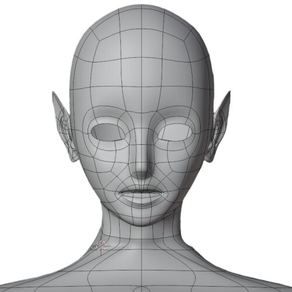
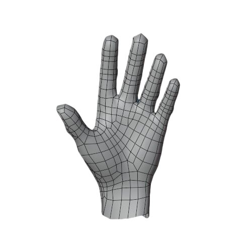
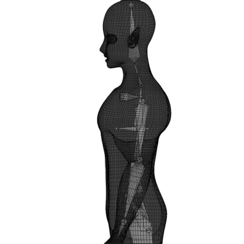
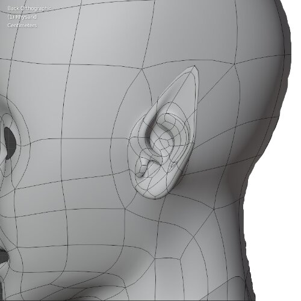
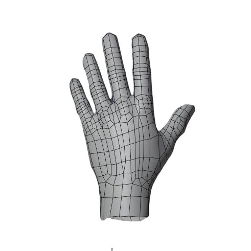
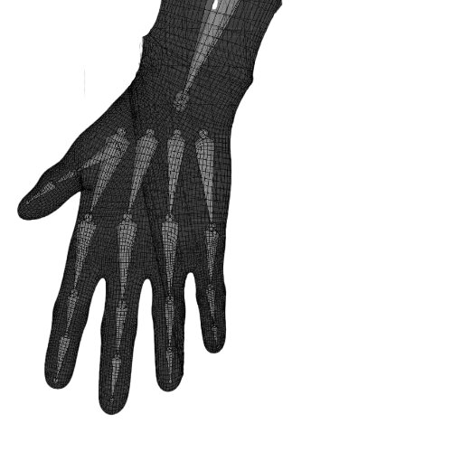

Meet Rhysand! He is my latest major project that I've been working on for a few weeks now. Rhysand is an inspiration born from the magical world of books and is "alive" thanks to my imagination and knowledge in the direction of the 3D modeling. The creation process was not easy, but after all those long hours of staying up late and working, I must say that I am satisfied with the result, maybe not so perfect for some, but perfect enough for my level of work.

Rhysand's head was my biggest challenge of all other parts of his body, and it took longest timeto shape, but at the end it turned out pretty decent.

The hands, of course were also a big jump to do, but after clearing some imperfections and redoing the fingers twice, they are perfect enough for my character.

The rigging is an outstanding part of character's role and as that said, I represent you a part of Rhysand's bones ready for animations.

Fairy ears could be a tricky exprerience, but at the end I couldn't be more satisfied with the result.

Hands must be seen from both sides, right?.

The hand rigging is probably the most complicated thing in the whole body, because of the fingers and all the mucles in the palm.